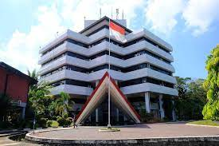

Universitas Hasanuddin (UNHAS)
Universitas Hasanuddin (UNHAS) merupakan sebuah perguruan tinggi negeri di kota Makassar, Provinsi Sulawesi, Indonesia, yang berdiri pada 10 September 1956. Perguruan tinggi ini semula merupakan pengembangan dari Fakultas Ekonomi Universitas Indonesia ketika Bung Hatta masih menjadi Wakil Presiden. Kampus Unhas semula dibangun di Baraya atau Kampus Barayya.
Namun, awal tahun 1980-an, ketika Rektor dijabat Prof. Dr. Ahmad Amiruddin, Kampus Unhas dipindahkan ke Tamalanrea, karena Kampus Barayya pada saat itu sering terjadi langganan banjir ketika musim hujan tiba. Saat itu kampus Barayya berada di dekat kanal, sehingga mahasiswa dan dosen untuk masuk ke dalam ruangan kampus, mereka harus menggunakan perahu.
Kini Kampus Unhas menempati areal seluas 220 hektare di Tamalanrea dengan berbagai fasilitas. Sejak tahun 2022, terdapat 16 fakultas di Universitas Hasanuddin. Saat ini telah dikembangkan dan beroperasi, kampus baru Unhas yang dikhususkan untuk Fakultas Teknik, yang terletak di bekas pabrik kertas di Kabupaten Gowa. Kampus baru ini mulai dipergunakan sejak tahun 2006 walaupun masih dalam tahap renovasi dan pembangunan gedung dan pengadaan fasilitas.
Pada tahun ini, Universitas Hasanuddin memasuki tantangan sekaligus harapan yang baru, pasalnya Unhas mulai menjalankan penuh statusnya sebagai Perguruan Tinggi Negeri Berbadan Hukum (PTNBH) yang sebelumnya sejak tahun lalu Unhas telah menguji coba sistem tersebut yang sudah diamanahkan pemerintah bersama belasan PTN lainnya.
Sejarah
Mengawali berdirinya Universitas Hasanuddin secara resmi pada tahun 1956, di kota Makassar pada tahun 1947 telah berdiri Fakultas Ekonomi yang merupakan cabang Fakultas Ekonomi Universitas Indonesia (UI) Djakarta berdasarkan keputusan Letnan Jenderal Gubernur Pemerintah Hindia Belanda Nomor 127 tanggal 23 Juli 1947. Karena ketidakpastian yang berlarut-larut dan kekacauan di Makassar dan sekitarnya maka fakultas yang dipimpin oleh Drs L.A. Enthoven (Direktur) ini dibekukan dan baru dibuka kembali sebagai cabang Fakultas Ekonomi Universitas Indonesia pada 7 Oktober 1953 di bawah pimpinan Prof. Drs. G.H.M. Riekerk. Fakultas Ekonomi benar-benar hidup sebagai cikal bakal Universitas Hasanuddin setelah dipimpin acting ketua Prof. Drs. Wolhoff dan sekretarisnya Drs. Mohammad Baga pada tanggal 1 September 1956 sampai diresmikannya Universitas Hasanuddin pada tanggal 10 September 1956.
Sebelumnya saat Universitas Hasanuddin sedang dipersiapkan untuk didirikan, berlangsung rapat yang dihadiri oleh kalangan cendekiawan Sulawesi salah satunya Drs. H. La Ode Manarfa. Ia adalah seorang Putra Sri Sultan Buton XXXVIII La Ode Falihi yang baru saja menyelesaikan pendidikan sarjananya dari Universitas Leiden Belanda. Saat itu Drs. H. La Ode Manarfa mengusulkan agar Universitas Hasanuddin mengadopsi simbol Ayam Jantan dalam logo yang hendak dirumuskan. Hal ini didasari oleh ingatan Ayam Jantan yang lekat dengan Sultan Hasanuddin dari Kesultanan Gowa, gagah berani menghadapi Belanda layaknya Ayam Jago yang tidak pernah gentar terhadap lawannya. Hingga kemudian pihak Universitas Hasanuddin menyetujui dan mengadakan sayembara, maka dibuatlah logo Universitas Hasanuddin seperti yang dikenal saat ini.
Di saat terjadinya stagnasi Fakultas Ekonomi pada akhir tahun 1950, Nuruddin Sahadat, Prof. Drs. G.J. Wolhoff, Mr. Tjia Kok Tjiang, J.E. Tatengkeng dan kawan-kawan mempersiapkan pendirian Fakultas Hukum swasta. Jerih payah mereka melahirkan Balai Perguruan Tinggi Sawerigading yang di bawah ketuanya Prof. Drs. G.J. Wolhoff tetap berusaha mewujudkan universitas negeri sampai terbentuknya Panitia Pejuang Universitas Negeri di bulan Maret 1950. Jalan yang ditempuh untuk mewujudkan universitas didahului dengan membuka Fakultas Hukum dan Pengetahuan Masyarakat cabang Fakultas Hukum Universitas Indonesia (UI) yang resmi didirikan tanggal 3 Maret 1952 dengan Dekan pertama Prof. Mr. Djokosoetono yang juga sebagai Dekan Fakultas Hukum Universitas Indonesia (UI). Dilandasi semangat kerja yang tinggi, kemandirian dan pengabdian, Fakultas Hukum yang dipimpin Prof. Dr. Mr. C. de Heern dan dilanjutkan Prof. Drs. G.H.M. Riekerk, dalam kurun waktu empat tahun mampu memisahkan diri dari Universitas Indonesia dengan keluarnya PP no. 23 tahun 1956 tertanggal 10 September 1956.
Langkah usaha Yayasan Balai Perguruan Tinggi Sawerigading untuk membentuk Fakultas Kedokteran terwujud dengan tercapainya kesepakatan antara pihak Yayasan dengan Kementerian PP dan K yang ditetapkan dalam rapat Dewan Menteri tanggal 22 Oktober 1953. Berdasarkan ketetapan tersebut dibentuklah Panitia Persiapan Fakultas Kedokteran di Makassar yang diketuai Sjamsuddin Daeng Mangawing dengan Muhammad Rasjid Daeng Sirua sebagai sekretaris dan anggota-anggotanya yaitu J.E. Tatengkeng, Andi Patiwiri dan Sampara Daeng Lili. Pada tanggal 28 Januari 1956, Menteri P dan K Prof. Mr. R. Soewandi meresmikan Fakultas Kedokteran Makassar yang kelak berubah menjadi Fakultas Kedokteran Universitas Hasanuddin seiring dengan diresmikannya Universitas Hasanuddin pada tanggal 10 September 1956.